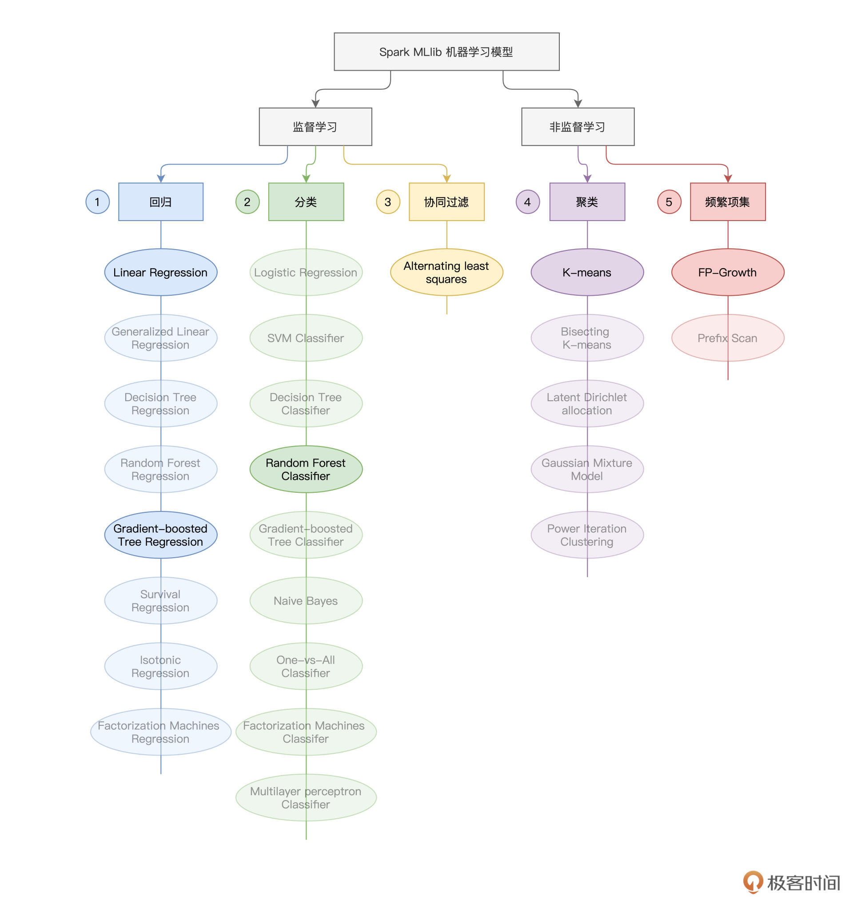
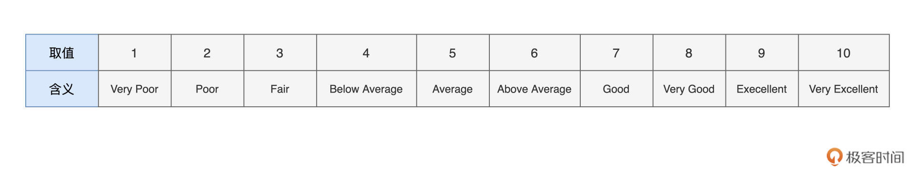
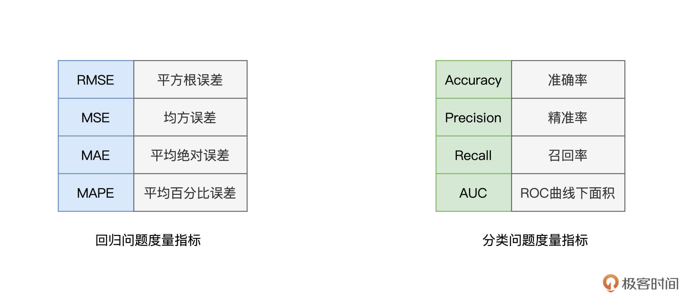
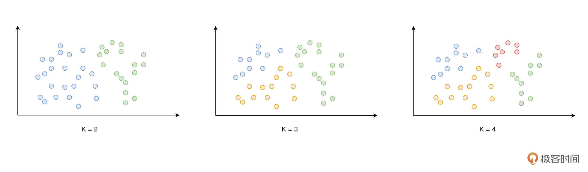
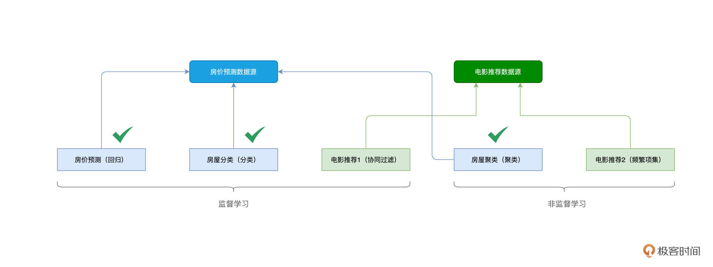

- 00 开篇词 入门Spark，你需要学会“三步走”.md
- 01 Spark：从“大数据的Hello World”开始.md
- 02 RDD与编程模型：延迟计算是怎么回事？.md
- 03 RDD常用算子（一）：RDD内部的数据转换.md
- 04 进程模型与分布式部署：分布式计算是怎么回事？.md
- 05 调度系统：如何把握分布式计算的精髓？.md
- 06 Shuffle管理：为什么Shuffle是性能瓶颈？.md
- 07 RDD常用算子（二）：Spark如何实现数据聚合？.md
- 08 内存管理：Spark如何使用内存？.md
- 09 RDD常用算子（三）：数据的准备、重分布与持久化.md
- 10 广播变量 & 累加器：共享变量是用来做什么的？.md
- 11 存储系统：数据到底都存哪儿了？.md
- 12 基础配置详解：哪些参数会影响应用程序稳定性？.md
- 13 Spark SQL：让我们从“小汽车摇号分析”开始.md
- 14 台前幕后：DataFrame与Spark SQL的由来.md
- 15 数据源与数据格式：DataFrame从何而来？.md
- 16 数据转换：如何在DataFrame之上做数据处理？.md
- 17 数据关联：不同的关联形式与实现机制该怎么选？.md
- 18 数据关联优化：都有哪些Join策略，开发者该如何取舍？.md
- 19 配置项详解：哪些参数会影响应用程序执行性能？.md
- 20 Hive + Spark强强联合：分布式数仓的不二之选.md
- 21 Spark UI（上）：如何高效地定位性能问题？.md
- 22 Spark UI（下）：如何高效地定位性能问题？.md
- 23 Spark MLlib：从“房价预测”开始.md
- 24 特征工程（上）：有哪些常用的特征处理函数？.md
- 25 特征工程（下）：有哪些常用的特征处理函数？.md
- 26 模型训练（上）：决策树系列算法详解.md
- 27 模型训练（中）：回归、分类和聚类算法详解.md
- 28 模型训练（下）：协同过滤与频繁项集算法详解.md
- 29 Spark MLlib Pipeline：高效开发机器学习应用.md
- 30 Structured Streaming：从“流动的Word Count”开始.md
- 31 新一代流处理框架：Batch mode和Continuous mode哪家强？.md
- 32 Window操作&Watermark：流处理引擎提供了哪些优秀机制？.md
- 33 流计算中的数据关联：流与流、流与批.md
- 34 Spark + Kafka：流计算中的“万金油”.md
- 用户故事 小王：保持空杯心态，不做井底之蛙.md
- 结束语 进入时间裂缝，持续学习.md
27 模型训练（中）：回归、分类和聚类算法详解
你好，我是吴磊。
在上一讲，我们学习了决策树系列算法，包括决策树、GBDT和随机森林。今天这一讲，我们来看看在Spark MLlib框架下，如何将这些算法应用到实际的场景中。
你还记得我们给出的Spark MLlib模型算法“全景图”么？对于这张“全景图”，我们会时常回顾它。一方面，它能为我们提供“全局视角”，再者，有了它，我们就能够轻松地把学习过的内容对号入座，从而对于学习的进展，做到心中有数。

今天这一讲，我们会结合房屋预测场景，一起学习回归、分类与聚类中的典型算法在Spark MLlib框架下的具体用法。掌握这些用法之后，针对同一类机器学习问题（回归、分类或是聚类），你就可以在其算法集合中，灵活、高效地做算法选型。
房屋预测场景
在这个场景中，我们有3个实例，分别是房价预测、房屋分类和房屋聚类。房价预测我们并不陌生，在前面的学习中，我们一直在尝试把房价预测得更准。
房屋分类，它指的是，给定离散标签（Label），如“OverallQual”（房屋质量），结合房屋属性特征，将所有房屋分类到相应的标签取值，如房屋质量的“好、中、差”三类。
而房屋聚类，它指的是，在不存在标签的情况下，根据房屋特征向量，结合“物以类聚”的思想，将相似的房屋聚集到一起，形成聚类。
房价预测
在特征工程的两讲中，我们一直尝试使用线性模型来拟合房价，但线性模型的拟合能力相当有限。决策树系列模型属于非线性模型，在拟合能力上，更胜一筹。经过之前的讲解，想必你对Spark MLlib框架下模型训练的“套路”，已经了然于胸，模型训练基本上可以分为3个环节：
- 准备训练样本
- 定义模型，并拟合训练数据
- 验证模型效果
除了模型定义，第一个与第三个环节实际上是通用的。不论我们采用哪种模型，训练样本其实都大同小异，度量指标（不论是用于回归的RMSE，还是用于分类的AUC）本身也与模型无关。因此，今天这一讲，我们把重心放在第二个环节，对于代码实现，我们在文稿中也只粘贴这一环节的代码，其他环节的代码，你可以参考特征工程的两讲的内容。
[上一讲]我们学过了决策树系列模型及其衍生算法，也就是随机森林与GBDT算法。这两种算法既可以解决分类问题，也可以用来解决回归问题。既然GBDT擅长拟合残差，那么我们不妨用它来解决房价预测的（回归）问题，而把随机森林留给后面的房屋分类。
要用GBDT来拟合房价，我们首先还是先来准备训练样本。
// numericFields代表数值字段，indexFields为采用StringIndexer处理后的非数值字段
val assembler = new VectorAssembler()
.setInputCols(numericFields ++ indexFields)
.setOutputCol("features")
// 创建特征向量“features”
engineeringDF = assembler.transform(engineeringDF)
import org.apache.spark.ml.feature.VectorIndexer
// 区分离散特征与连续特征
val vectorIndexer = new VectorIndexer()
.setInputCol("features")
.setOutputCol("indexedFeatures")
// 设定区分阈值
.setMaxCategories(30)
// 完成数据转换
engineeringDF = vectorIndexer.fit(engineeringDF).transform(engineeringDF)
我们之前已经学过了VectorAssembler的用法，它用来把多个字段拼接为特征向量。你可能已经发现，在VectorAssembler之后，我们使用了一个新的特征处理函数对engineeringDF进一步做了转换，这个函数叫作VectorIndexer。它是用来干什么的呢？
简单地说，它用来帮助决策树系列算法（如GBDT、随机森林）区分离散特征与连续特征。连续特征也即数值型特征，数值之间本身是存在大小关系的。而离散特征（如街道类型）在经过StringIndexer转换为数字之后，数字与数字之间会引入原本并不存在的大小关系（具体你可以回看[第25讲]）。
这个问题要怎么解决呢？首先，对于经过StringIndexer处理过的离散特征，VectorIndexer会进一步对它们编码，抹去数字之间的比较关系，从而明确告知GBDT等算法，该特征为离散特征，数字与数字之间相互独立，不存在任何关系。
VectorIndexer对象的setMaxCategories方法，用于设定阈值，该阈值用于区分离散特征与连续特征，我们这里设定的阈值为30。这个阈值有什么用呢？凡是多样性（Cardinality）大于30的特征，后续的GBDT模型会把它们看作是连续特征，而多样性小于30的特征，GBDT会把它们当作是离散特征来进行处理。
说到这里，你可能会问：“对于一个特征，区分它是连续的、还是离散的，有这么重要吗？至于这么麻烦吗？”
还记得在决策树基本原理中，特征的“提纯”能力这个概念吗？对于同样一份数据样本，同样一个特征，连续值与离散值的“提纯”能力可能有着天壤之别。还原特征原本的“提纯”能力，将为决策树的合理构建，打下良好的基础。
好啦，样本准备好之后，接下来，我们就要定义并拟合GBDT模型了。
import org.apache.spark.ml.regression.GBTRegressor
// 定义GBDT模型
val gbt = new GBTRegressor()
.setLabelCol("SalePriceInt")
.setFeaturesCol("indexedFeatures")
// 限定每棵树的最大深度
.setMaxDepth(5)
// 限定决策树的最大棵树
.setMaxIter(30)
// 区分训练集、验证集
val Array(trainingData, testData) = engineeringDF.randomSplit(Array(0.7, 0.3))
// 拟合训练数据
val gbtModel = gbt.fit(trainingData)
可以看到，我们通过定义GBTRegressor来定义GBDT模型，其中setLabelCol、setFeaturesCol都是老生常谈的方法了，不再赘述。值得注意的是setMaxDepth和setMaxIter，这两个方法用于避免GBDT模型出现过拟合的情况，前者限定每棵树的深度，而后者直接限制了GBDT模型中决策树的总体数目。后面的训练过程，依然是调用模型的fit方法。
到此为止，我们介绍了如何通过定义GBDT模型，来拟合房价。后面的效果评估环节，鼓励你结合[第23讲]的模型验证部分，去自行尝试，加油！
房屋分类
接下来，我们再来说说房屋分类。我们知道，在“House Prices - Advanced Regression Techniques”竞赛项目中，数据集总共有79个字段。在之前，我们一直把售价SalePrice当作是预测标的，也就是Label，而用其他字段构建特征向量。
现在，我们来换个视角，把房屋质量OverallQual看作是Label，让售价SalePrice作为普通字段去参与构建特征向量。在房价预测的数据集中，房屋质量是离散特征，它的取值总共有10个，如下图所示。

如此一来，我们就把先前的回归问题（预测连续值），转换成了分类问题（预测离散值）。不过，不管是什么机器学习问题，模型训练都离不开那3个环节：
- 准备训练样本
- 定义模型，并拟合训练数据
- 验证模型效果
在训练样本的准备上，除了把预测标的从SalePrice替换为OverallQual，我们完全可以复用刚刚使用GBDT来预测房价的代码实现。
// Label字段："OverallQual"
val labelField: String = "OverallQual"
import org.apache.spark.sql.types.IntegerType
engineeringDF = engineeringDF
.withColumn("indexedOverallQual", col(labelField).cast(IntegerType))
.drop(labelField)
接下来，我们就可以定义随机森林模型、并拟合训练数据。实际上，除了类名不同，RandomForestClassifier在用法上与GBDT的GBTRegressor几乎一模一样，如下面的代码片段所示。
import org.apache.spark.ml.regression.RandomForestClassifier
// 定义随机森林模型
val rf= new RandomForestClassifier ()
// Label不再是房价，而是房屋质量
.setLabelCol("indexedOverallQual")
.setFeaturesCol("indexedFeatures")
// 限定每棵树的最大深度
.setMaxDepth(5)
// 限定决策树的最大棵树
.setMaxIter(30)
// 区分训练集、验证集
val Array(trainingData, testData) = engineeringDF.randomSplit(Array(0.7, 0.3))
// 拟合训练数据
val rfModel = rf.fit(trainingData)
模型训练好之后，在第三个环节，我们来初步验证模型效果。
需要注意的是，衡量模型效果时，回归与分类问题，各自有一套不同的度量指标。毕竟，回归问题预测的是连续值，我们往往用不同形式的误差（如RMSE、MAE、MAPE，等等）来评价回归模型的好坏。而分类问题预测的是离散值，因此，我们通常采用那些能够评估分类“纯度”的指标，比如说准确度、精准率、召回率，等等。

这里，我们以Accuracy（准确度）为例，来评估随机森林模型的拟合效果，代码如下所示。
import org.apache.spark.ml.evaluation.MulticlassClassificationEvaluator
// 在训练集上做推理
val trainPredictions = rfModel.transform(trainingData)
// 定义分类问题的评估对象
val evaluator = new MulticlassClassificationEvaluator()
.setLabelCol("indexedOverallQual")
.setPredictionCol("prediction")
.setMetricName("accuracy")
// 在训练集的推理结果上，计算Accuracy度量值
val accuracy = evaluator.evaluate(trainPredictions)
好啦，到此为止，我们以房价预测和房屋分类为例，分别介绍了如何在Spark MLlib框架下去应对回归问题与分类问题。分类与回归，是监督学习中最典型的两类模型算法，是我们必须要熟悉并掌握的。接下来，让我们以房屋聚类为例，说一说非监督学习。
房屋聚类
与监督学习相对，非监督学习，泛指那些数据样本中没有Label的机器学习问题。
以房屋数据为例，整个数据集包含79个字段。如果我们把“SalePrice”和“OverallQual”这两个字段抹掉，那么原始数据集就变成了不带Label的数据样本。你可能会好奇：“对于这些没有Label的样本，我们能拿他们做些什么呢？”
其实能做的事情还真不少，基于房屋数据，我们可以结合“物以类聚”的思想，使用K-means算法把他们进行分门别类的处理。再者，在下一讲电影推荐的例子中，我们还可以基于频繁项集算法，挖掘出不同电影之间共现的频次与关联规则，从而实现推荐。
今天我们先来讲K-mean，结合数据样本的特征向量，根据向量之间的相对距离，K-means算法可以把所有样本划分为K个类别，这也是算法命名中“K”的由来。举例来说，图中的每个点，都代表一个向量，给定不同的K值，K-means划分的结果会随着K的变化而变化。

在Spark MLlib的开发框架下，我们可以轻而易举地对任意向量做聚类。
首先，在模型训练的第一个环节，我们先把训练样本准备好。注意，这一次，我们去掉了“SalePrice”和“OverallQual”这两个字段。
import org.apache.spark.ml.feature.VectorAssembler
val assembler = new VectorAssembler()
// numericFields包含连续特征，oheFields为离散特征的One hot编码
.setInputCols(numericFields ++ oheFields)
.setOutputCol("features")
接下来，在第二个环节，我们来定义K-means模型，并使用刚刚准备好的样本，去做模型训练。可以看到，模型定义非常简单，只需实例化KMeans对象，并通过setK指定K值即可。
import org.apache.spark.ml.clustering.KMeans
val kmeans = new KMeans().setK(20)
val Array(trainingSet, testSet) = engineeringDF
.select("features")
.randomSplit(Array(0.7, 0.3))
val model = kmeans.fit(trainingSet)
这里，我们准备把不同的房屋划分为20个不同的类别。完成训练之后，我们同样需要对模型效果进行评估。由于数据样本没有Label，因此，先前回归与分类的评估指标，不适合像K-means这样的非监督学习算法。
K-means的设计思想是“物以类聚”，既然如此，那么同一个类别中的向量应该足够地接近，而不同类别中向量之间的距离，应该越远越好。因此，我们可以用距离类的度量指标（如欧氏距离）来量化K-means的模型效果。
import org.apache.spark.ml.evaluation.ClusteringEvaluator
val predictions = model.transform(trainingSet)
// 定义聚类评估器
val evaluator = new ClusteringEvaluator()
// 计算所有向量到分类中心点的欧氏距离
val euclidean = evaluator.evaluate(predictions)
好啦，到此为止，我们使用非监督学习算法K-means，根据房屋向量，对房屋类型进行了划分。不过你要注意，使用这种方法划分出的类型，是没有真实含义的，比如它不能代表房屋质量，也不能代表房屋评级。既然如此，我们用K-means忙活了半天，图啥呢？
尽管K-means的结果没有真实含义，但是它以量化的形式，刻画了房屋之间的相似性与差异性。你可以这样来理解，我们用K-means为房屋生成了新的特征，相比现有的房屋属性，这个生成的新特征（Generated Features）往往与预测标的（如房价、房屋类型）有着更强的关联性，所以让这个新特性参与到监督学习的训练，就有希望优化/提升监督学习的模型效果。

好啦，到此为止，结合房价预测、房屋分类和房屋聚类三个实例，我们成功打卡了回归、分类和聚类这三类模型算法。恭喜你！离Spark MLlib模型算法通关，咱们还有一步之遥。在下一讲，我们会结合电影推荐的场景，继续学习两个有趣的模型算法：协同过滤与频繁项集。
重点回顾
今天这一讲，你首先需要掌握K-means算法的基本原理。聚类的设计思想，是“物以类聚、人以群分”，给定任意向量集合，K-means都可以把它划分为K个子集合，从而完成聚类。
K-means的计算主要依赖向量之间的相对距离，它的计算结果，一方面可以直接用于划分“人群”、“种群”，另一方面可以拿来当做生成特征，去参与到监督学习的训练中去。
此外，你需要掌握GBTRegressor和RandomForestClassifier的一般用法。其中，setLabelCol与setFeaturesCol分别用于指定模型的预测标的与特征向量。而setMaxDepth与setMaxIter分别用于设置模型的超参数，也即最大树深与最大迭代次数（决策树的数量），从而避免模型出现过拟合的情况。
每课一练
对于房价预测与房屋分类这两个场景，你觉得在它们之间，有代码（尤其是特征工程部分的代码）复用的必要和可能性吗？
欢迎你在留言区跟我交流互动，也推荐你把这一讲的内容分享给更多的同事、朋友。
© 2019 - 2023 Liangliang Lee. Powered by gin and hexo-theme-book.